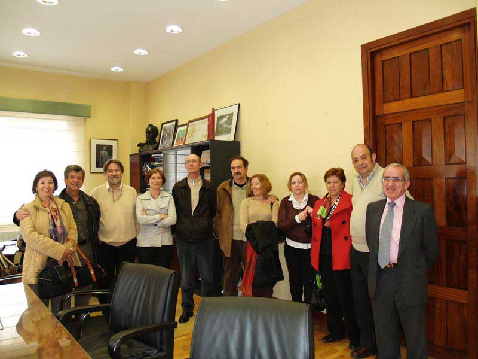

Encuentro en SantoñaAnterior | Inicio | Siguiente |
|
 Gracias al querido compañero Ramón Rueda, se concertó una entrevista con la Alcaldesa para, además de trasmitirle nuestro saludo, ponerla al corriente de la celebración del próximo Cincuentenario de la fundación del Patronato, para lo que se le pidió ayuda y colaboración, no poniendo objeción alguna en ello, pidiendo solo que se constituyera una comisión que se encargara de los preparativos del evento, para los que se designaron a Ramón y Hueto, por parte de los antiguos alumnos y ella misma hasta que designara a la persona que la sustituyera y faltando otro más por parte del Ministerio de Defensa. Tras la amena charla con Puerto, Alcaldesa de Santoña y antigua alumna del Patronato, se hizo la tradicional fotografía del encuentro en la que, una vez más, el Sr. Barrallo, no desaprovecha el tiempo. Posicionamiento, Mari Carmen, Barrallo, Manolo, Puerto, Ramón, Carlos, Pilar, Ana, Carmeli, Fernando y Jaime. |